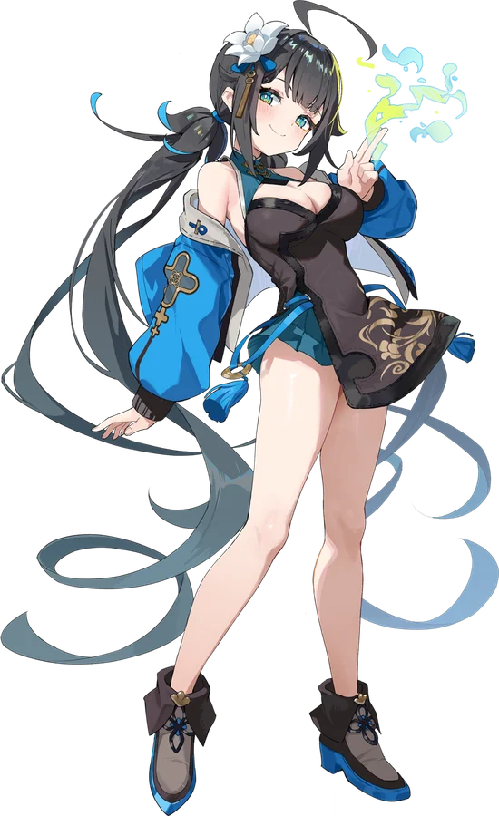
姬梦朝 · 风水师
“隆兴饭店”的二把手。其真实身份是“凰天会”的二当家，也是会里的风水师，道上的人都称她为“二公主”。与姐姐不同，梦朝主要是负责内部事务，在饭店和自己领地出现的次数比姐姐要多的多。
自身获得治疗溢出量的星币，持续1回合。获得1张符卡-福并将手牌中所有的符卡-祸转化为符卡-福。
PVE指定一个角色施加白泽祝福（增加治疗溢出量的攻击力），目标增加治疗溢出量的攻击力，持续1回合。获得1张符卡-福且将手牌中所有的符卡-祸转化为符卡-福。
骰点为1时，获得1张符卡-祸，骰点为6时，获得1张符卡-福。
对姬梦枫使用符卡-福时，目标获得1层养精蓄锐（攻击力+2，防御力+2）。
<div style="display: flex; width: 100%; justify-content: space-between;"> <div> PVE模式中，姬梦朝通过主动技能可以给予角色白泽祝福（增加治疗溢出量的攻击力）效果，同时该角色的状态栏内会存在对应的效果图标白泽赐福。 姬梦朝使用符卡-福或符卡-祸后，被治愈/攻击的角色/怪物身上会出现对应的特效（如右图）。姬梦朝自己因为符卡-祸的效果受伤时，自己身上也会出现对应的特效。 姬梦朝被击倒后不会自动丢弃全部的符卡-福与符卡-祸。 </div> <div><gallery>Fu 01.png</gallery><gallery>Fu 02.png</gallery></div> </div>
基础资料
PVE 特性
- 达到1星时防御力+1
- 初始星币+6
- 达到3星时攻击力+1、防御力+1、移动速度+1
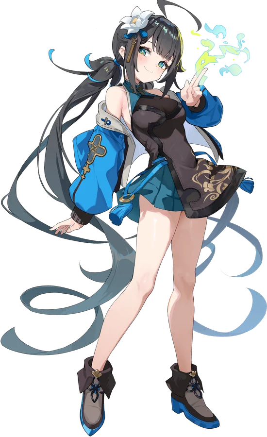
默认

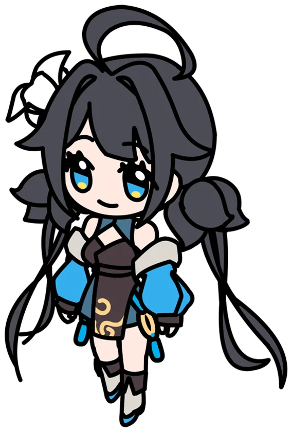
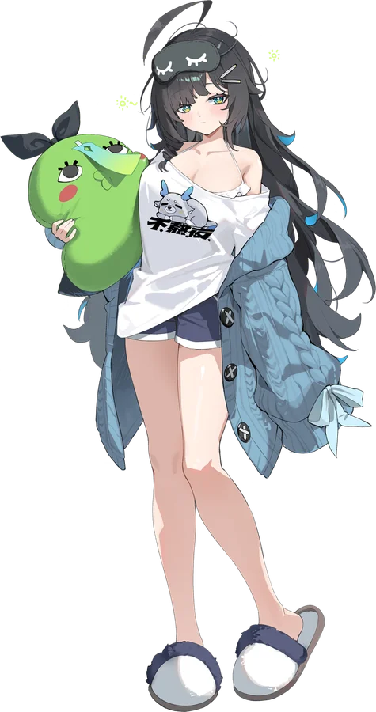
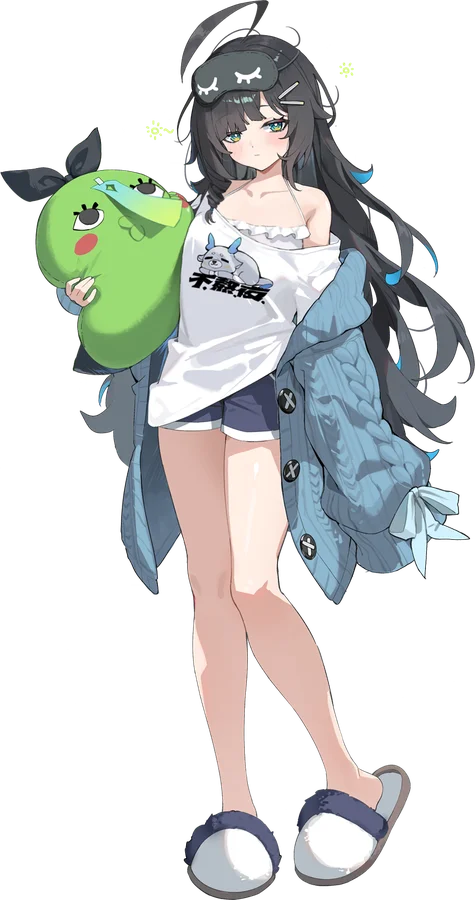
羁绊皮肤
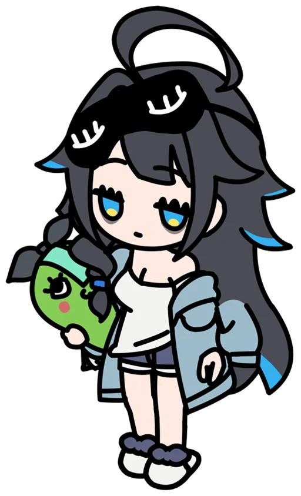
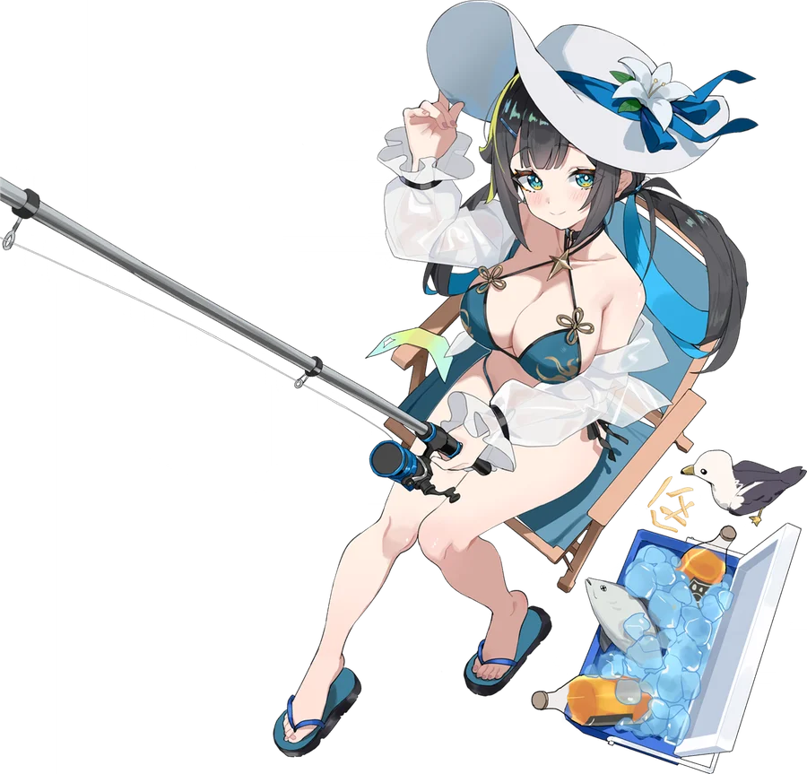
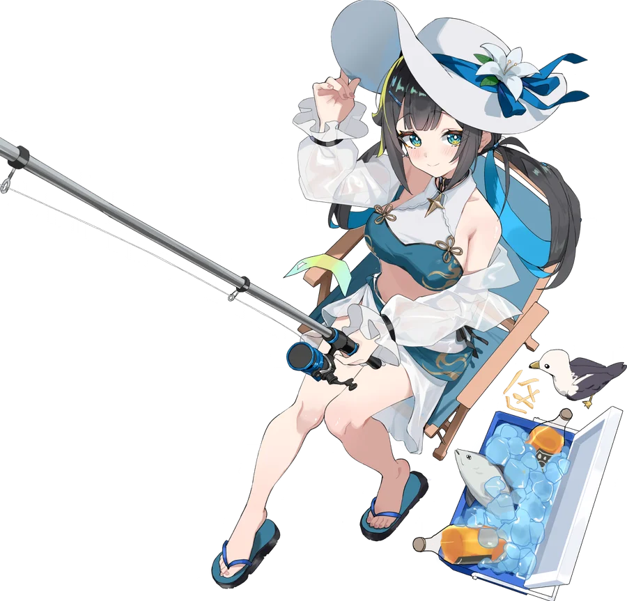
滨边时光
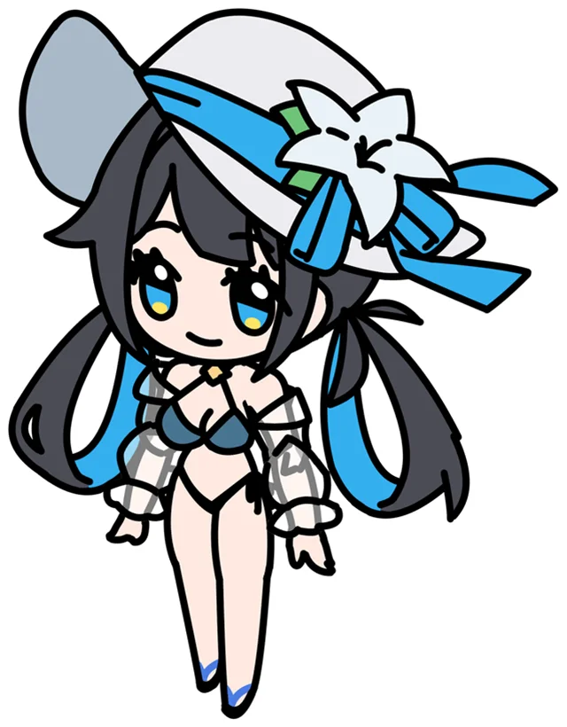
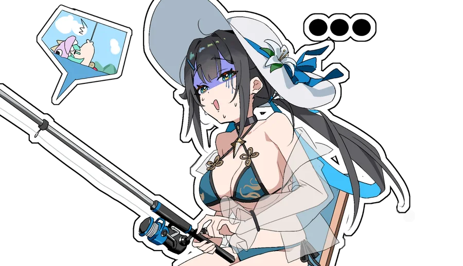
“姐姐来了啊。”姬梦朝抓着帽檐抬头看着姐姐。 “嗯，刚和老爷子聊了一下，他想让我去趟迷宫祭祖。” 梦枫打开折叠椅坐下，随后从旁边的盒子取出假饵准备挂在鱼竿上。 “有时候我就在想，如果我俩只是普通的姐妹，周末的下午可以在一起悠闲的钓鱼，然后悠闲的在海边烧烤，该多惬意啊。”梦朝熟练的摆弄着钓竿。 “家里的那些事情，迟早是要落到我们头上。”梦枫猛的甩出鱼竿。 “啊啊！姐，快，快帮我一下！”梦朝此时手里的鱼竿剧烈的抖动起来。 “力气好大啊！”此时梦朝的手被鱼竿的压力挤得都没血色了。 “来了来了！看见了，哦好大一条！”此时黑色的大鱼已经露出了水面。 “看样子今天地运气不错呢。”梦朝也很高兴的看着姐姐。 “是啊，感觉我俩今天可以钓很多呢。不管了，今天我要钓到天黑！”梦枫回到了小椅子上重新坐下。 “嗯，我陪着你~” 所以啊，姐妹俩在一起开心最重要，其他的等钓完鱼再说吧。
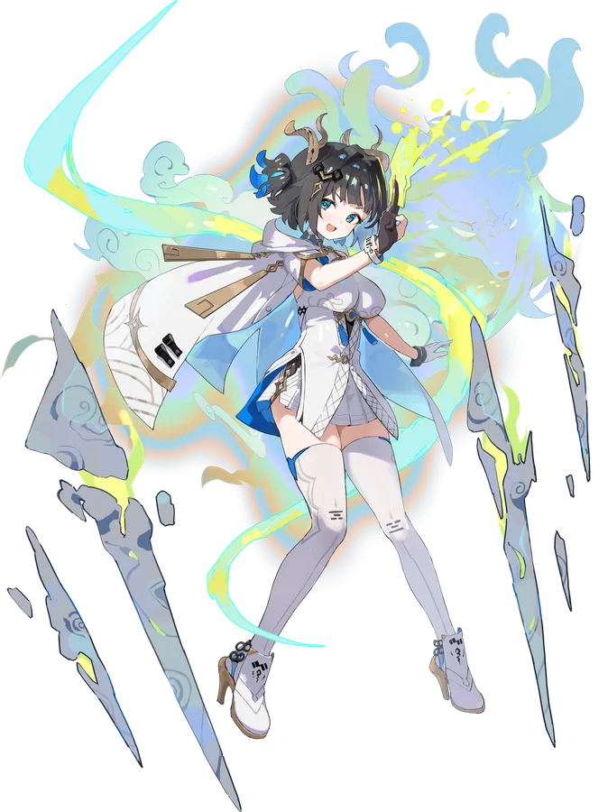
祥瑞天章
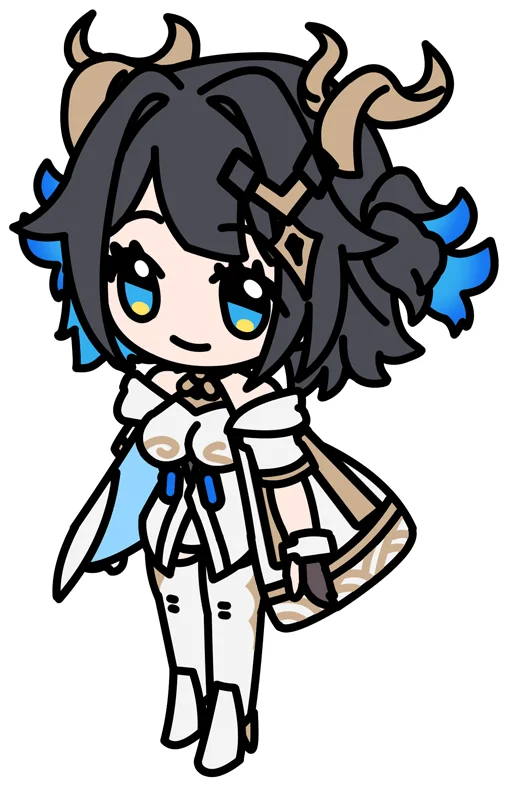
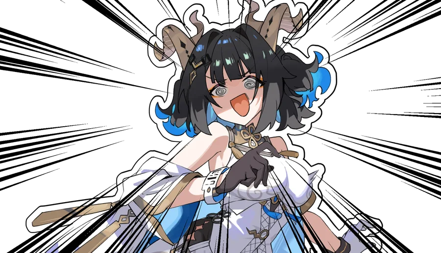
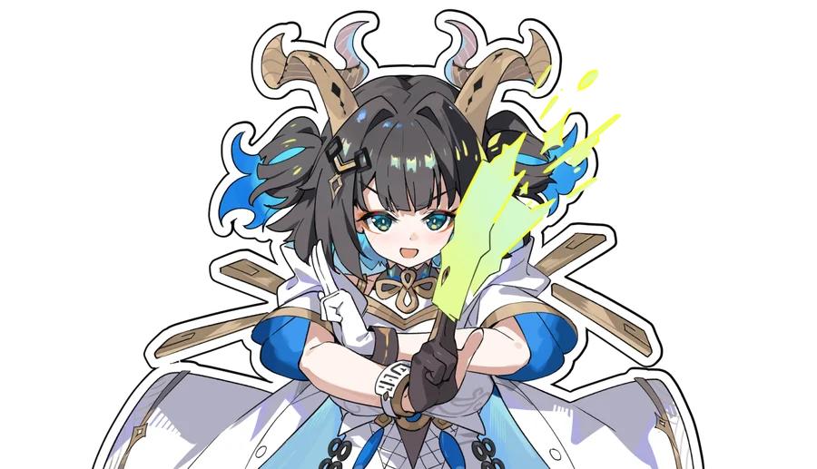
姬家的孩子在成长过程中都会逐渐觉醒属于自己的神力，这些神力通常与传说中的动物或现实中的生灵相关。 初代创建人姬天女觉醒的神力是凤凰，因此凤凰成为姬家的精神图腾。可以说，正是先有神力的觉醒，才有了“凰天会”的诞生。 如今，姬家迎来了两位女孩的降临。先出生的是姐姐姬梦枫，她顽皮好动，元气满满，充满求知欲；后出生的妹妹姬梦朝则乖巧温柔，温文尔雅，待人和善。 然而，神力的觉醒并非由年龄决定。有时一出生便带有神力，有时则需等到成年，通过自身探索逐渐觉醒。而这姐妹俩正属于后者——妹妹姬梦朝比姐姐更早觉醒神力。 代表祥瑞的白泽神兽成为姬梦朝的觉醒神力。相传，白泽能通晓万物之情，可驱除一切邪祟，是纯粹的瑞兽。 她俩的气质完全契合，以至于许多人认为，这正是为姬梦朝量身定做的神力。 当她穿上白泽赐福的法衣时，她便成为“祥瑞”一词最直观的具象化象征。
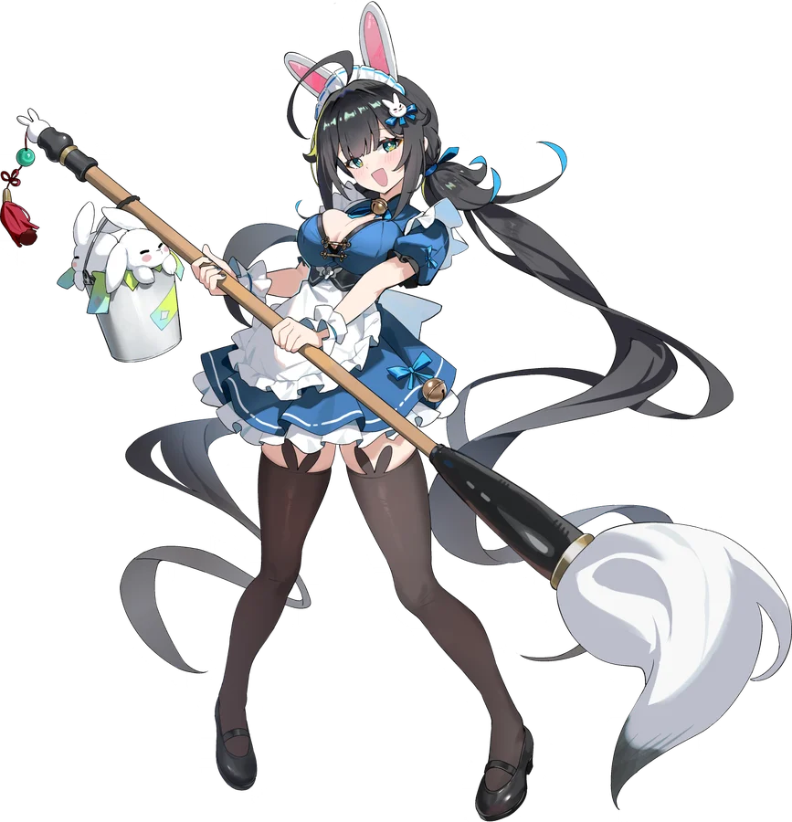
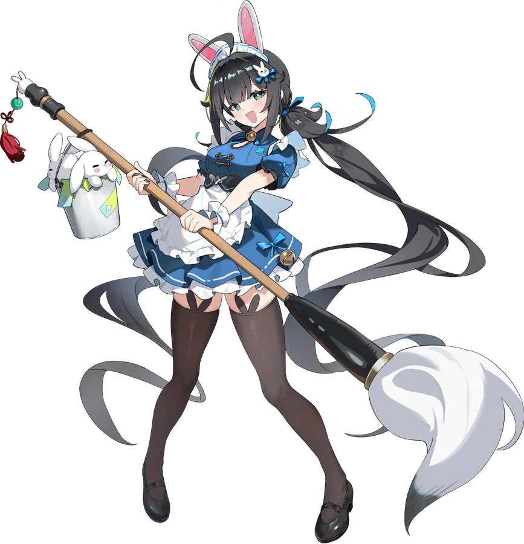
玉兔挥毫
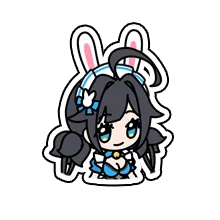
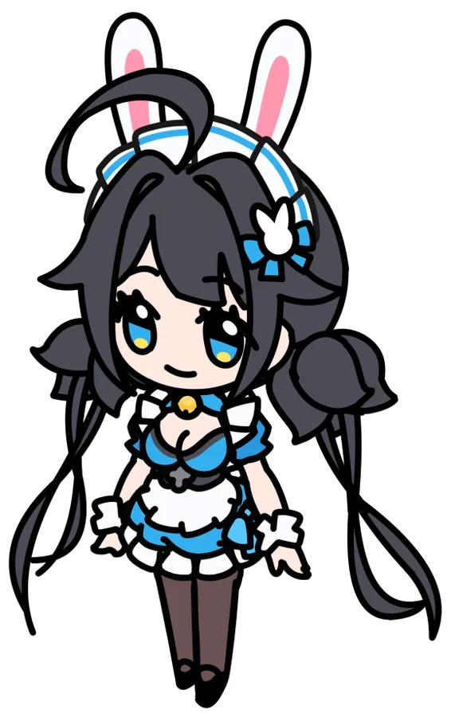
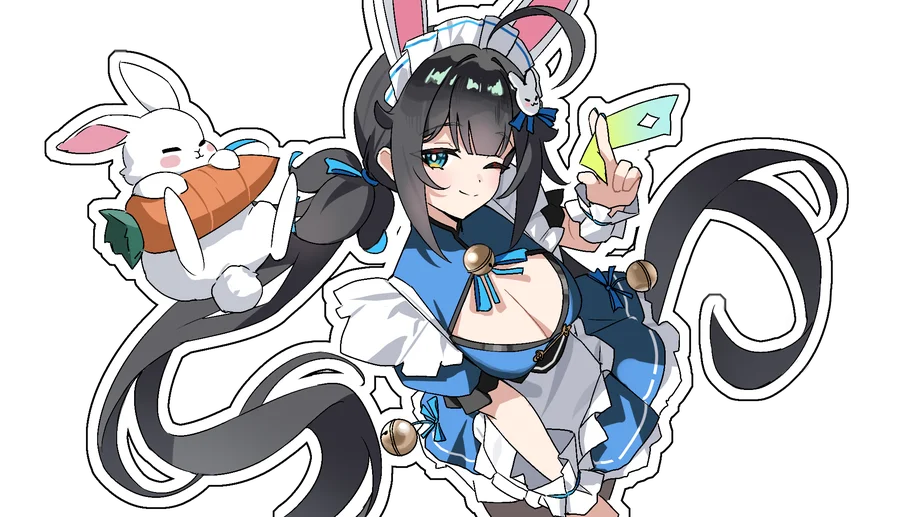
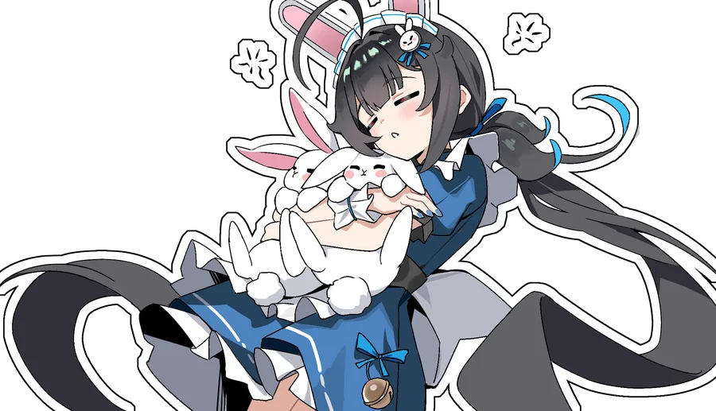
“姐姐姐姐！快来啊！别光在那里喝茶，管家让我们写一副超大对联，准备挂出去呢！” 庭院正中铺开了一张大得如同院子般的巨幅宣纸。端着茶杯的姬梦枫刚想问这是在干嘛，穿着古怪服饰的妹妹就已经兴奋地嚷嚷起来： “今天是丰收节，也是赏月的日子，大家都换上了可爱的衣服，我也给你留了一套！” 看着妹妹头顶上晃晃悠悠的兔耳朵，姬梦枫立刻转身加快了脚步——她可不想沦为妹妹的换装娃娃。 “我就算了，等下还要去和财务开会呢。你挂对联时小心点啊。” 姬梦朝正握着硕大的毛笔饱蘸浓墨，在纸上挥毫狂舞，该说不说还挺像那么回事。只见她身姿矫健地写下几个大字，顺手将巨笔往地上一杵当成拐杖，冲着正准备开溜的姐姐喊道： “那我回头再把衣服给你送过去！今天可是要轮到我们跑堂的哦！” 看样子，姬梦枫今天是注定逃不掉了。
共 17 个表情，点击可放大。
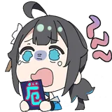
官方 wiki 没有这角色的 /获取 页，头像、名片、卡牌、骰子的完整清单暂缺；下方「档案」里保留了画廊中的零散素材。
人物传记
每周末饭店的例行检查她都会和食客们攀谈，以改善饭店的服务质量。
皮肤故事
滨边时光
“姐姐来了啊。”姬梦朝抓着帽檐抬头看着姐姐。 “嗯，刚和老爷子聊了一下，他想让我去趟迷宫祭祖。” 梦枫打开折叠椅坐下，随后从旁边的盒子取出假饵准备挂在鱼竿上。 “有时候我就在想，如果我俩只是普通的姐妹，周末的下午可以在一起悠闲的钓鱼，然后悠闲的在海边烧烤，该多惬意啊。”梦朝熟练的摆弄着钓竿。 “家里的那些事情，迟早是要落到我们头上。”梦枫猛的甩出鱼竿。 “啊啊！姐，快，快帮我一下！”梦朝此时手里的鱼竿剧烈的抖动起来。 “力气好大啊！”此时梦朝的手被鱼竿的压力挤得都没血色了。 “来了来了！看见了，哦好大一条！”此时黑色的大鱼已经露出了水面。 “看样子今天地运气不错呢。”梦朝也很高兴的看着姐姐。 “是啊，感觉我俩今天可以钓很多呢。不管了，今天我要钓到天黑！”梦枫回到了小椅子上重新坐下。 “嗯，我陪着你~” 所以啊，姐妹俩在一起开心最重要，其他的等钓完鱼再说吧。
祥瑞天章
姬家的孩子在成长过程中都会逐渐觉醒属于自己的神力，这些神力通常与传说中的动物或现实中的生灵相关。 初代创建人姬天女觉醒的神力是凤凰，因此凤凰成为姬家的精神图腾。可以说，正是先有神力的觉醒，才有了“凰天会”的诞生。 如今，姬家迎来了两位女孩的降临。先出生的是姐姐姬梦枫，她顽皮好动，元气满满，充满求知欲；后出生的妹妹姬梦朝则乖巧温柔，温文尔雅，待人和善。 然而，神力的觉醒并非由年龄决定。有时一出生便带有神力，有时则需等到成年，通过自身探索逐渐觉醒。而这姐妹俩正属于后者——妹妹姬梦朝比姐姐更早觉醒神力。 代表祥瑞的白泽神兽成为姬梦朝的觉醒神力。相传，白泽能通晓万物之情，可驱除一切邪祟，是纯粹的瑞兽。 她俩的气质完全契合，以至于许多人认为，这正是为姬梦朝量身定做的神力。 当她穿上白泽赐福的法衣时，她便成为“祥瑞”一词最直观的具象化象征。
玉兔挥毫
“姐姐姐姐！快来啊！别光在那里喝茶，管家让我们写一副超大对联，准备挂出去呢！” 庭院正中铺开了一张大得如同院子般的巨幅宣纸。端着茶杯的姬梦枫刚想问这是在干嘛，穿着古怪服饰的妹妹就已经兴奋地嚷嚷起来： “今天是丰收节，也是赏月的日子，大家都换上了可爱的衣服，我也给你留了一套！” 看着妹妹头顶上晃晃悠悠的兔耳朵，姬梦枫立刻转身加快了脚步——她可不想沦为妹妹的换装娃娃。 “我就算了，等下还要去和财务开会呢。你挂对联时小心点啊。” 姬梦朝正握着硕大的毛笔饱蘸浓墨，在纸上挥毫狂舞，该说不说还挺像那么回事。只见她身姿矫健地写下几个大字，顺手将巨笔往地上一杵当成拐杖，冲着正准备开溜的姐姐喊道： “那我回头再把衣服给你送过去！今天可是要轮到我们跑堂的哦！” 看样子，姬梦枫今天是注定逃不掉了。
画廊其他素材

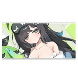
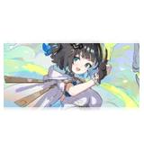
本地未收录该角色的语音台词。